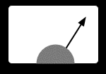

勘違いをしやすいという点は、逆に考えると イリュージョンを見る能力があるという長所だと考えることもできます。 計算機システムの入出力が多少いい加減だとしても、人間のこの「長所」のおかげで それなりに使えているものは多いでしょう。 例えばマウスでカーソルを動かすとき、カーソルの位置は離散的にしか動きませんが、 人間の目にはなめらかに動くように見えます。 メニューバーをクリックしてプルダウンメニューを表示するとき、 メニューのウィンドウをいきなり表示したとしても、 メニューバーが拡大してメニューが表示されたように見えるものです。 システムがこのようなサボった動きをした場合でも、 人間の知覚能力の限界のため、それほど不自然には感じられません。 例えば以下のアニメーション画像は 右に振れた針の画像と左に振れた針の画像を交互に表示しているだけですが、 間が補間されて、針が実際に左右に振れているように見えるでしょう。

メニューに限らず、計算機のGUIは 人間の錯覚をうまく利用した手品的な手法を活用しているものだということができます。 GUI画面にはプログラムやファイルを表現するアイコンが表示され、 あたかもそれらのアイコンが実際の物であるかのように操作できるようになっていますが、 「ファイル」の実体も/ それを表現する「アイコン」も/ その操作方法も/ 完全なイリュージョンであり、ハードディスク上のビットの並びやその操作とはかけ離れた存在です。 GUIをはじめとする計算機のインタフェースは完全に手品的なものであり、 ユーザが積極的に騙されることによって、 わかったような気になって計算機を利用することができるようになっているというわけです。 表示されているアイコンとハードディスク内のデータはどういう関係なのだろう? などといちいち悩んでいたらパソコンで仕事など不可能でしょう。
MacintoshのGUI作成に深くかかわった Bruce Tognazzini氏は、 ステージマジックとインタフェースには沢山の共通点があるということを 指摘しています。 彼の持っている奇術の本には、 奇術では以下のような要素が重要であると書かれているそうです。
このような地味な注意が必要であることに加え、 ステージマジックでは芸人としての手腕が要求されます。 奇術の演者は人間的に魅力がなければなりませんし、 話術を交えたりしながら滑らかに/簡潔に技を披露する必要がありますが、 このような点もインタフェースの設計と共通しています。 Tognazzini氏の設計したインタフェースでは このような「芸人根性」(ショーマンシップ)が充分考慮されているそうです。 例えばファイルを消すのに使う「ゴミ箱」は、 実世界メタファの応用というだけではなく、 ユーザがその存在を可愛いと思うから採用したのだそうです。 また、システムに「芸人根性」を発揮させてユーザに働きかけをすることにより、 新しいユーザを開拓したり親しみを持たせたりする各種の工夫がなされているそうです。
その他、奇術における以下のような工夫がインタフェース作成でも重要そうです。